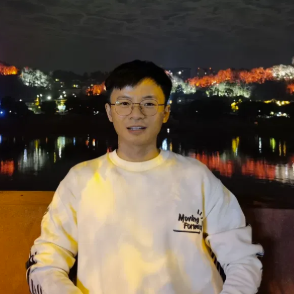
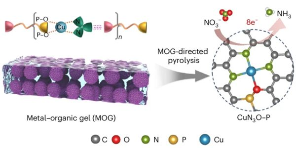
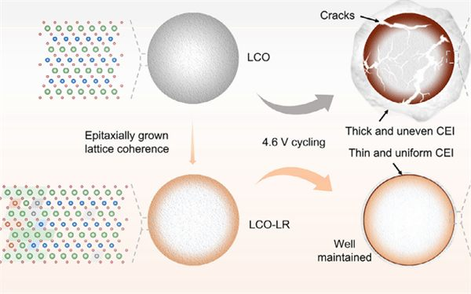
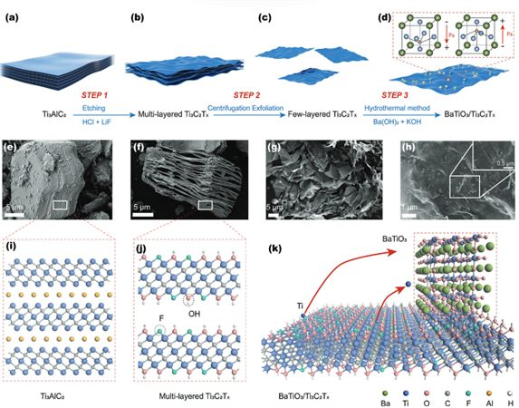
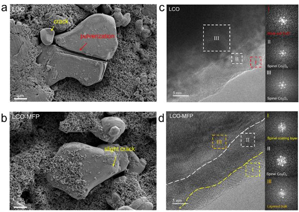
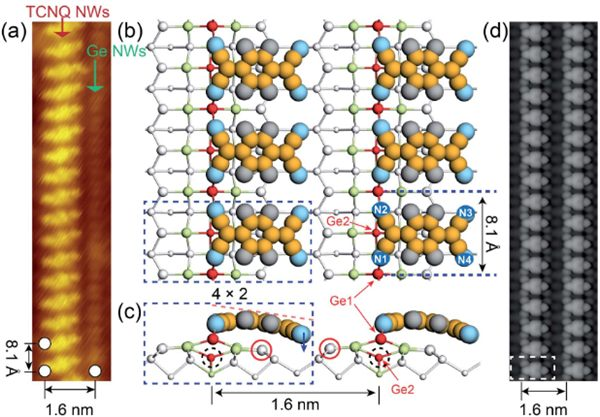
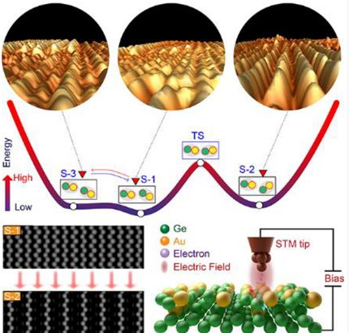

Computational Materials & AI4Science
First-principles DFT, AIMD, and machine-learning interatomic potentials (DeepMD, CHGNet) for complex materials systems — from defect supercells to phase transitions to electrode interfaces.
Research Fellow · Materials Modeling
First-principles modeling of defects, interfaces, and phase transitions in functional oxides and semiconductor surfaces.
Research Fellow · National University of Singapore

I am a Research Fellow at the National University of Singapore with five years of R&D experience rooted in semiconductor surface science, with deep expertise in atomic-scale thin film growth, surface metallization, and phase transition mechanisms on semiconductor substrates.
My work applies first-principles computation (DFT, AIMD, MLIP), informed by prior experimental experience in UHV-STM, MBE, and PVD, to diagnose root causes of process-level challenges such as interfacial diffusion, defect formation, and phase instability — and translate computational insight into actionable experimental strategy.
Additional strengths include ferroelectric / piezoelectric defect engineering and surface / interface modification for performance optimization of electrode materials. I am currently building DFT-to-MLIP fine-tuning pipelines with CHGNet to accelerate simulation of ferroelectric phase transitions.
I obtained my Ph.D. in Chemistry from NUS under Prof. Xu Guoqin (Fellow, Singapore National Academy of Science), M.Eng. from Xi'an Jiaotong University under Prof. Lou Xiaojie, and B.Sc. in Materials Physics from Sichuan University under Prof. Wu Jiagang.
Three threads running through my work — centered on computational insight and focused on mechanism rather than correlation.
First-principles DFT, AIMD, and machine-learning interatomic potentials (DeepMD, CHGNet) for complex materials systems — from defect supercells to phase transitions to electrode interfaces.
Designing ferroelectric and piezoelectric materials and exploring their applications in sensors and electrode interface modification for next-generation batteries. Focus on defect dipoles, oxygen-vacancy coupling, and phase-boundary engineering.
Growth mechanisms, electric-field-induced structural phase transitions, and electronic property modulation of low-dimensional systems on Ge(001) and related substrates. STM tip-driven nanowire switching demonstrated experimentally.
A selection of recent first / corresponding-author work. Full list on Google Scholar →
# equal contribution · * corresponding author






Independent computational research on ferroelectric and luminescent materials. Building DFT-to-MLIP fine-tuning workflows.
Led DFT theoretical guidance for electrode interface modification projects. Co-supervised graduate students. Published 9 SCI papers as first / corresponding author in this period.
Advisor: Prof. Xu Guoqin (Fellow, Singapore National Academy of Science). Co-trained at A*STAR Institute of High Performance Computing (2019–2022). Cu/Au/Pt ultrathin films and nanowire self-assembly on Ge(001) via UHV-STM, MBE/PVD, and DFT.
Advisor: Prof. Lou Xiaojie. Oxygen vacancy control and defect dipole engineering in BiFeO₃-based lead-free ferroelectric ceramics.
Advisor: Prof. Wu Jiagang. Recommended for postgraduate study without examination.
Notes and short essays will be added here.
This space is reserved for future research notes and writing.
Open to research collaborations, industry roles in computational materials / process engineering, and conversations about the future of AI for materials discovery.